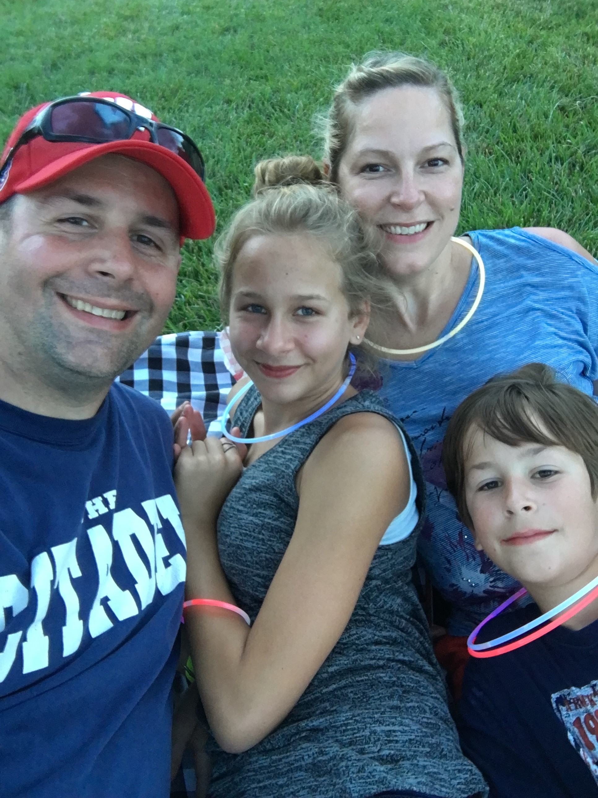

Born and raised in Charlotte, NC. I have a M.S. degree in Cartography and Geographic Information Systems from the Univeristy of Wisconsin-Madison. I also attended the University of North Carolina at Charlotte with a B.S. degree in Geography. Go Niners!. I enjoy solving problems with GIS and finding new ways to implement it. I love new technology, so whenever there is a new device or software, I'm eager to get my hands on it to see what it can do. In a previous life I was a police officer for 6 years. I spent 2 years at Kannapolis Police Department and 4 years at Charlotte-Mecklenburg Police Department.
When I'm not at work, I enjoying running and visting the mountains. I'm a huge Battlefield player. I also enjoy photography. When I was in high school, I had the opprotunity to work at a TV station as a photographer.
I love spending time with my family. I'm fortunate to have a great wife and two wonderful kids.
